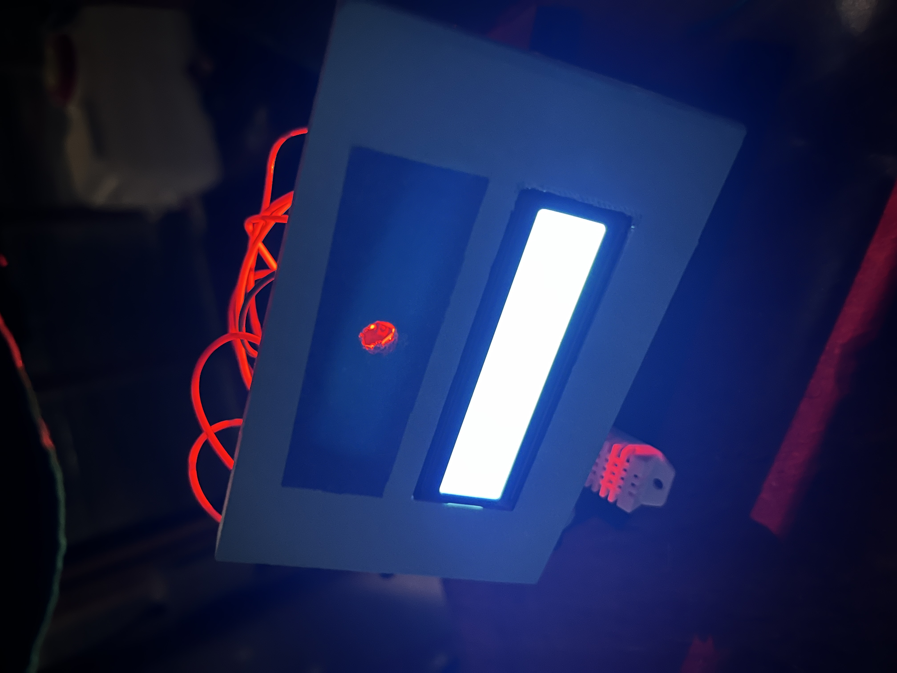
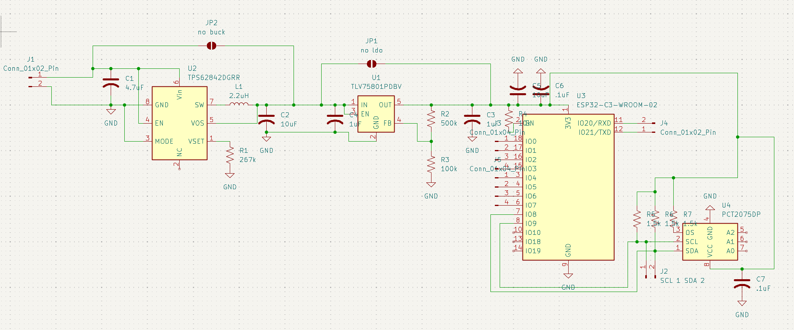
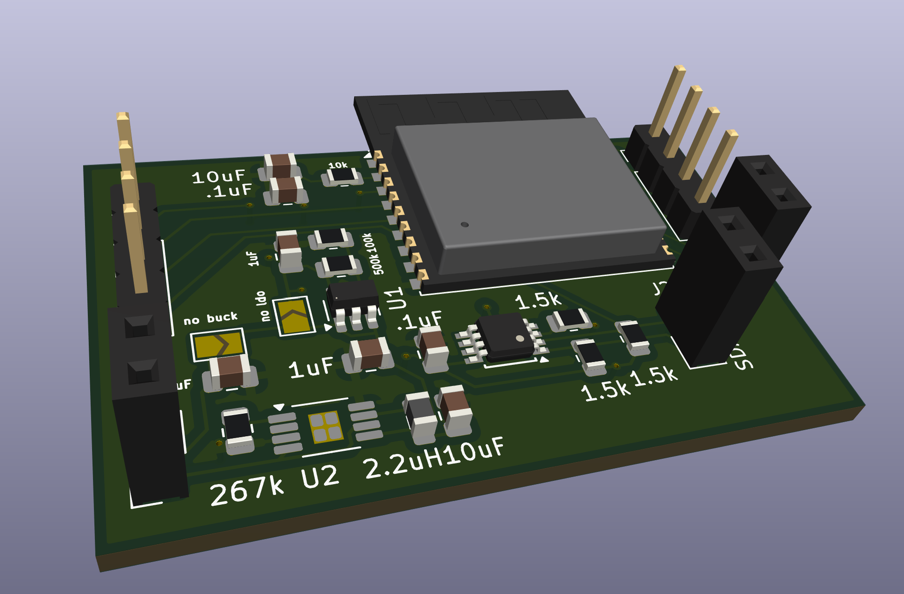
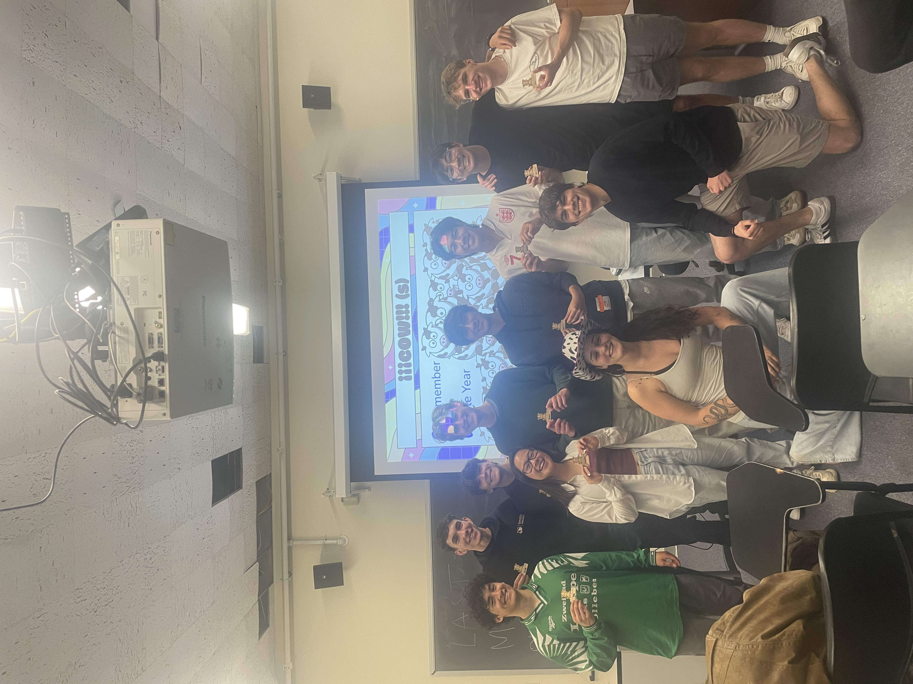

Wireless Greenhouse Monitoring System
Engineers Without Borders @ Tufts

Project Summary
In Engineers Without Borders (EWB), we built a fully automated and self-power-sufficient on-campus greenhouse. I helped build the automated watering system my freshman year. The following semester I became a technical lead and led a group of 10+ students to create a wireless monitoring system. I am now the Vice President of Tufts EWB.
Design Evolution
Original Design
- ESP32 devkit with existing parts
- DHT22 temperature/humidity sensors
- Programmed with Arduino IDE
- Good for teaching the tech group
Upgraded Design
- Custom PCB for professional build
- ESP-IDF framework for lower-level control
- Power efficiency optimizations
- Better control over consumption

Original prototype design (will update with a better photo)
Custom PCB Design
I am upgrading the design to keep power efficiency in mind and make the design more professional. Since the original was programmed with the Arduino IDE, there was lots of abstraction (which was good for teaching my tech group), but now using the ESP-IDF framework and a custom PCB board, I have more control over power consumption and efficiency.
Skills Developed
This project let me practice designing PCBs with KiCad, finding correct parts on DigiKey, and reading datasheets for the design.

Circuit schematic designed in KiCad

Custom PCB layout
Greenhouse Tech Leads

Greenhouse Tech Leads (I'm in the middle)